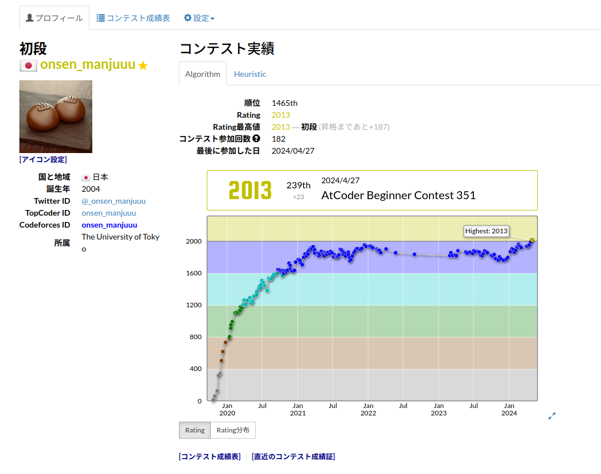
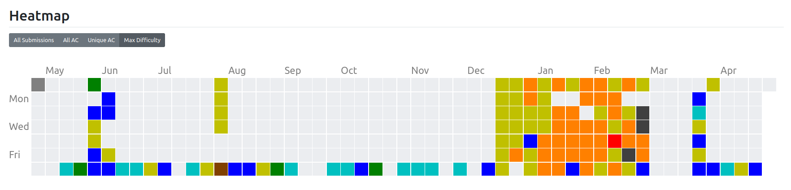

AtCoder黄色になったよ
いろいろ
去年の12月に黄色くなりたいな〜という気持ちになって2月の終わりまでABCのdiff2600↓を埋めていた。ほとんど埋めてしまったのと、旅行で3週間やらない間にすべて忘れてしまったのでいまは
週末競技プログラマー状態。
ARCは本当に勝てないんだけど(26戦22敗)、少なくともしばらくは出るつもりでいる。知らない典型が無限にある(最近だと、グリッドの中に重ならないようにミニ正方形を配置して覆われた領域
の和を最大化する問題とか)ので、その辺を潰せばもう少しなんとか勝てなくもないような気もする。それでも、A、Bあたりの整理して場合分けするアドホック寄りにみえる問題がなかなかできない。
画像たち
 その他
法学部の学生の中で一番レート高いんじゃないかなあと思っている。いたらごめん
最近みた新世界よりというアニメが面白いのでみんな見て、やっぱり強い女の子なんかなあ